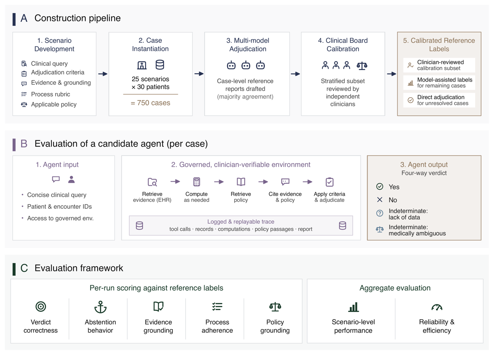
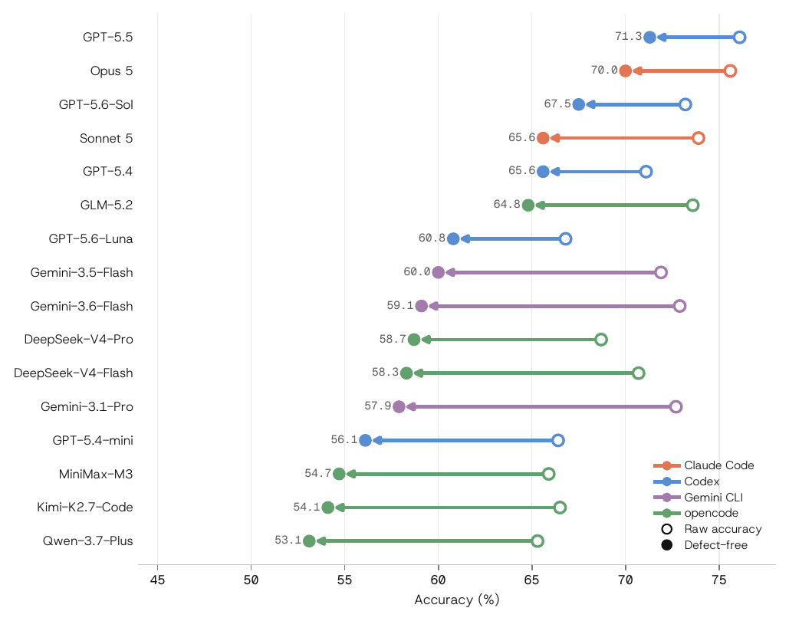
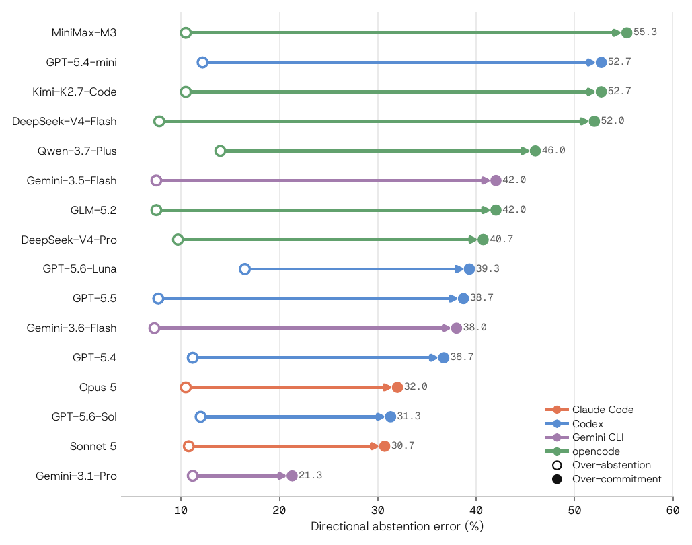

TL;DR — Benchmark d'audit clinique rétrospectif (25 scénarios × 30 patients = 750 cas MIMIC-IV) dont le vrai apport n'est pas le score mais l'architecture du vérifieur : un domaine sans vérité exacte est rendu scorable en découplant cinq axes mesurés séparément — verdict 4-classes (dont deux classes d'abstention distinctes), patient-evidence grounding, policy grounding, process adherence (rubrique pondérée must-do / must-not notée sur le rapport et la trajectoire d'outils), et fiabilité inter-essais — avec pour chaque axe la séparation explicite entre ce qui est calculé par règle et ce qui est jugé par LLM, et une mesure de la fiabilité du juge.
Claim principal : (i) sur 16 systèmes agentiques, l'accuracy 4-classes plafonne à 65,3–76,1 % ; (ii) la defect-free accuracy — un verdict n'est crédité que s'il est correct et n'enfreint aucun critère must-not — est inférieure de 4,8 à 14,8 points et réordonne le classement ; (iii) les 16/16 systèmes sous-abstiennent (over-commitment 21,3–55,3 % contre over-abstention 7,3–16,5 %) [Abstract, §1, §6.2].
⚠️ Mon cadrage : pour « Gemini Law », ce papier n'est pas un papier d'env RL (aucun rollout, aucun gradient) — c'est une recette de design de reward dense pour un domaine sans vérifieur exact, c'est-à-dire exactement le point dur du juridique. C'est à ce titre qu'il est A.
subject_id / hadm_id / stay_id [§4.2].Pipeline, étape par étape [§4.1→§4.5, Fig. 1A] :
1. Rédaction du scénario par cliniciens : query, critères opérationnels 4-voies (seuils, fenêtres temporelles, exclusions, conditions d'ambiguïté), évidence requise, documents gouvernants, rubrique must-do/must-not.
2. Revue scénario : deux cliniciens vettent indépendamment chaque scénario ; ils confirment que la query correspond à un vrai workflow de chart-review, estiment le temps d'adjudication manuelle, et révisent les critères 4-voies. Chaque règle de décision est taguée par provenance (guideline/policy nommée · connaissance clinique établie · choix opérationnel propre au benchmark) — c'est-à-dire qu'on sait quelle partie de l'adjudication est externement gouvernée et quelle partie est une convention du benchmark. Édits appliqués avant de lancer l'ensemble [§4.5].
3. Cohorte candidate par scénario : critères d'éligibilité larges, au niveau (admission / séjour ICU / procédure) approprié au scénario [§4.4].
4. Stratification par heuristiques scénario-spécifiques en strates provisoires Yes / No / Indeterminate ; échantillonnage de 30 patients par scénario. Les heuristiques servent uniquement au tirage, jamais au label final. Objectif déclaré : éviter que l'agrégat soit dominé par des cas positifs/négatifs faciles, et couvrir les flux d'évidence manquants, la documentation contradictoire, l'attribution temporelle ambiguë et les codes administratifs trompeurs. Les auteurs précisent que la distribution résultante n'est pas une prévalence clinique [§4.4, §7].
5. Labellisation par ensemble multi-modèles : trois configurations harness+modèle de familles distinctes — Claude Code Opus 4.8, Codex GPT-5.5, Gemini CLI Gemini 3.1 Pro — adjugent chaque cas indépendamment, avec accès à la spécification complète du scénario. Agrégation : 556/750 unanimes, 183/750 en 2-contre-1, 11/750 avec trois verdicts distincts ; seuls ces 11 sont escaladés à un clinicien pour adjudication directe [§4.4].
6. Calibration Clinical Board (voir §3 du mémo pour les chiffres) [§4.5].
eol-goal-concordance) à 37,1 % (pneumonia-curb65) ; les 5 scénarios les plus durs portent 30 % des erreurs contre 20 % sous difficulté uniforme. La difficulté et le pouvoir discriminant sont des axes distincts : le plus grand écart inter-systèmes appartient à dka-resolution (23 %→90 %), de difficulté moyenne [§6.2, App. D].Observation : une clinical query en langage naturel, concise, adressée à un utilisateur clinique, contenant les identifiants patient/rencontre. Elle spécifie l'objectif et les conventions de jugement, mais laisse la stratégie de retrieval à l'agent [§4.2]. Exemple complet (post-CT AKI) recopié plus bas. Ensuite, l'agent ne voit que ce qu'il va chercher : pas de contexte pré-assemblé, données ni pré-jointes ni pré-résumées [§3.2].
Espace d'actions / outils — quatre familles [§3.2] :
1. Clinical EHR Tools — outils paramétrés, vérifiés par cliniciens, organisés autour d'entités cliniques et non du schéma physique MIMIC : découverte patient/rencontre, récupération et recherche de notes, accès longitudinal aux résultats de labo, signes vitaux, administration de médicaments, microbiologie, procédures, imagerie, prescriptions (POE). Accès scopé à un patient à la fois.
2. SQL Fallback — interface SQL en lecture seule, plafonnée, conservée pour combler les trous de couverture des outils de haut niveau ; loggée séparément afin de quantifier quand un agent contourne l'interface clinique voulue.
3. Shell Execution — sandbox avec pandas, numpy, scipy. Justification explicite : l'adjudication exige des quantités dérivées non stockées (score de sévérité, intervalle entre événements, valeur tendancielle) ; commandes, sorties et artefacts générés sont conservés dans la trace.
4. Policy-Document Tools — list / search / read sur un corpus fixe de documents convertis PDF→Markdown ; les passages conservent la provenance document + numéro de ligne.
⚠️ Les signatures d'outils ne sont jamais données — ni liste formelle, ni paramètres, ni schéma de retour. Pour un papier qui revendique un « governed tool layer » comme contribution n°2, c'est l'absence la plus gênante.
Corpus de policies : fixe, partagé par tous les cas (pas de sous-ensemble filtré par cas) — l'agent doit lui-même déterminer quel document gouverne la question [§3.3]. Chaque scénario a 1 à 4 documents gouvernants de référence [§4.2]. Standards cités : KDIGO (AKI), CMS SEP-1 (sepsis), AABB (transfusion), AHA/ACC (insuffisance cardiaque), ACC expert consensus (réversion d'anticoagulation) [§1, §3.3]. Taille du corpus : non précisée.
Single / multi-turn : multi-turn. Médianes observées : 11 à 62 tours, 16 à 55 appels d'outils typés selon le système [§6.2]. Horizon maximal, budget de tours, limite de contexte : non précisés. Gestion du contexte long côté agent : non précisée (le papier ne décrit la troncature que côté juge, cf. §3 du mémo).
Exécution : les 4 harnais se connectent à l'environnement MIMIC via une interface MCP ; web search et fetch désactivés, donc tout provient du dossier in-env et du corpus de policies. Les données MIMIC ne sont atteignables que via un tool server à identifiants isolés, de sorte qu'aucun système ne peut contourner les outils gouvernés pour lire les enregistrements bruts [§6.1]. Déterminisme, reset, timeouts : non précisés. Indice de flakiness : « trials lost to the execution environment were re-run rather than dropped » [§6.6].
Gestion des sorties mal formées : traitement explicite et sévère — « Missing or unparseable verdicts are counted as incorrect rather than excluded from the denominator » [§5.2]. Mais les métriques de process/grounding utilisent des dénominateurs restreints : report-present run (rapport final parsable) pour process, defect-free et defect gap ; grounding-scoreable run (report-present et au moins un enregistrement patient récupéré) pour les 4 métriques de grounding patient [§5.1]. ⚠️ Conséquence : un système qui plante proprement est puni sur l'accuracy mais disparaît du dénominateur de process. Les auteurs ne rapportent jamais le taux de runs non-report-present.
Format de sortie exigé : rapport final contenant le verdict 4-voies, les citations d'évidence patient (identifiants d'enregistrement), les citations de policy au format inline [policy: document L_a--L_b] (document du corpus + span de lignes), et une confiance déclarée [§5.4, §6.2].
Exemple de spécification de tâche (recopié, tronqué) [App. B, post-ct-aki] :
Clinical Query : « For ICU patient
<subject_id, hadm_id>who underwent a CT this admission, did the patient develop AKI within 48 h after the CT? Set the baseline creatinine hierarchically — the lowest value in the 3–12 months before admission; else the admission creatinine (the patient may already present in AKI); else, if CKD is documented, an MDRD estimate assuming eGFR 75 mL/min/1.73 m². Apply the KDIGO serum-creatinine criteria and frame the result as AKI following CT, not as contrast-caused injury; where serum creatinine does not reflect the patient's own kidney function, say the question does not resolve rather than applying the thresholds. »Indeterminate: Lack of Data si : aucun étage de la hiérarchie de baseline n'est instanciable ; ou aucune créatinine dans les 48 h post-CT ; ou moins de deux valeurs post-CT (le pic n'est pas confirmé) ; ou le timing du CT n'est pas résoluble (heure de prescription vs heure de scan, ou pas de « premier CT qualifiant » unique) ; ou aucun CT identifiable dans l'admission (prémisse non remplie, cas hors périmètre).
Indeterminate: Medically Ambiguous si : dialyse chronique ou ESRD (ICD N18.6 / Z99.2 / 585.6 / V45.11, ou toute prescription d'hémodialyse), donc les seuils KDIGO aigus ne s'appliquent pas ; ou baseline labile — les créatinines candidates fluctuent matériellement, donc aucune référence propre n'est instanciable et une hausse de +0,3 mg/dL n'est pas attribuable avec confiance.
Required Evidence : la timeline de créatinine depuis la source de baseline jusqu'à 48 h post-CT, montrant chaque valeur ; statut ESRD/dialyse ; et l'heure du scan distinguée de l'heure de prescription, confirmée via le compte rendu radiologique quand c'est possible.
⚠️ À noter : la query dicte elle-même la convention d'abstention (« say the question does not resolve rather than applying the thresholds »). L'abstention n'est donc pas une capacité émergente testée à froid : elle est instruite. Ça reste une décision de design défendable (en déploiement la consigne serait donnée aussi), mais ça interdit de lire les taux d'abstention comme une mesure de calibration spontanée.
Principe directeur, énoncé explicitement [§5.7] : « checks that can be settled referentially, against the trace or the policy corpus, are computed by rule, while judgments about whether evidence supports a claim, whether a required finding is addressed, or whether a process criterion holds are delegated to a judge ». Chaque axe pair un contrôle référentiel (déterministe) et un contrôle substantiel (jugé).
| Axe | Métrique | Calcul | Granularité |
|---|---|---|---|
| Verdict | Accuracy 4-classes, Macro-F1 | règle — match exact 4-classes, aucun crédit partiel ; non-parsable = faux | outcome, binaire |
| Abstention | Over-commitment, Over-abstention, ECE (10 bins) | règle | outcome, directionnel |
| Grounding patient | P_record (identifiants cités présents dans l'évidence récupérée au cours du même run) |
règle | claim |
P_claim (fraction de claims supported) |
juge LLM | claim | |
R_retrieval (sources requises interrogées avec le bon scope patient/rencontre/temporel) |
règle | trajectoire | |
R_finding (findings requis traités dans le rapport) |
juge LLM | rapport | |
| Grounding policy | Citation-resolution rate (doc présent + span valide) ; Doc-P, Doc-R contre le set gouvernant expert | règle | citation / document |
| Citation support (le passage cité étaye-t-il la claim portée ?) | juge LLM | citation | |
| Process | Score pondéré must-do / must-not | juge LLM sur rapport + trajectoire | process, crédit partiel pondéré |
| Fiabilité | avg@k, SD, pass^k, pass@k, verdict agreement, agree-wrong |
règle | run répété |
S_process = max(0, Σ_m w_m·z_m / Σ_{m: w_m>0} w_m), où z_m = 1 si le juge estime que l'action requise a été effectuée ou que l'action interdite a été commise. Dénominateur = somme des poids positifs seuls, entre 7 et 16 points selon le scénario. Le plancher à 0 n'est pas décoratif : dans un scénario, les pénalités disponibles dépassent tout le budget positif [§5.5].must-not recopiés [§5.5] : « inferring an endpoint from an administrative code alone », « treating an order time as a performed-procedure time », « asserting a causal relationship the record does not support ». Exemple instancié [§6.3, Tab. « Qualitative failure profile »] : N4 = « Asserted SBP excluded without an ascitic-fluid result ». Exemple de must-do : D5 = « Escalated when a key candidate was not worked up despite indication ».τ_i = 1[∃ must-not violé] ; un run n'est crédité que si verdict correct et τ_i = 0. Le defect gap est l'écart avec l'accuracy sur le même dénominateur report-present [§5.5].⚠️ Les prompts de juge et les rubriques complètes ne sont pas en annexe. L'annexe B donne quatre spécifications de scénario complètes (query, critères 4-voies, évidence requise, grounding requis) — contribution réelle et directement réutilisable — mais aucune rubrique must-do/must-not n'est reproduite intégralement, et aucun prompt de juge. On ne dispose que de N4, D5 et des trois exemples génériques ci-dessus. Les auteurs annoncent la publication des « judge prompts » [§7] ; non vérifiable à ce jour.
Pas de terme de format ni de longueur. Le seul analogue : les non-parsables comptent comme faux [§5.2] et sortent des dénominateurs de process/grounding [§5.1]. Le coût (turns, tool calls, work-tokens, USD) est rapporté mais explicitement traité comme un index d'effort, non d'efficacité, et déclaré non comparable entre familles de harnais — turns non-comparables (batching différent), tool calls sous-comptés pour les harnais passant par shell/code-exec, work-tokens dépendants de ce que le serving path rapporte sur les cache reads [§5.8].
(a) Labels de référence vs cliniciens [§4.5] : - Échantillon de 75 cas (10 %, 3 par scénario), 1 relecteur chacun : le verdict de référence égale le verdict clinicien sur 91 % des cas à label défini (64/70), Cohen κ = 0,87. Les 5 cas sans majorité sont escaladés par design. - L'accord suit la consensus de l'ensemble : parfait quand unanime (46/46), il tombe à 75 % (18/24) sur les cas 2-contre-1. - Chaque désaccord sur cas majoritaire se résout vers le modèle dissident, jamais vers un label extérieur : le jugement expert reste dans l'enveloppe de l'ensemble. - Sous-ensemble à double lecture (25 scénarios, 1 cas chacun, 2 relecteurs, aucun relecteur ne voit deux fois le même cas) : les deux cliniciens s'accordent entre eux sur 80 % (κ = 0,69), tandis que la référence s'accorde mieux avec chacun d'eux individuellement (κ = 0,87 et 0,81). Le label assisté par modèle est plus proche de chaque clinicien que les deux cliniciens ne le sont l'un de l'autre. L'accord relecteur-relecteur chute le plus vite sur les cas non unanimes. - Qualité des rapports de l'ensemble notée sound / minor error / major error : 73 % sound sur 225 notations (75 cas) et 81 % sur 150 (sous-ensemble double). Gwet AC1 ≈ 0,70 (les auteurs notent que κ sous-estime ici, sound dominant la marginale). Catégories d'erreur : misapplied criteria 38 % / 53 % des tags, devant missed evidence 24 % / 24 % — les échecs sont dans l'application des règles, pas dans la remontée de l'évidence.
(b) Juge de process [§6.7] : panel de 5 juges, 3 réplicats chacun, sur la rubrique complète de chaque trajectoire. Désaccord moyen par paires → 16 % des critères « contestés » ; juges auto-cohérents entre réplicats et « statistiquement interchangeables sur le score agrégé » (Fleiss κ ≈ 0,65). Boucle vertueuse revendiquée : les critères les plus contestés (une fenêtre de désescalade antibiotique cachée, une thérapie de l'insuffisance cardiaque dépendante de l'époque) sont exactement ceux qu'un audit expert indépendant avait signalés comme sous-spécifiés — le désaccord entre juges sert de détecteur automatique de critères ambigus, renvoyés à révision experte plutôt que traités comme des mesures stables.
(c) Juges de grounding [§6.7] : P_record et R_retrieval sont par règle et reproduisent exactement (recalcul sur un run complet de 750 : toutes les valeurs par essai inchangées). R_finding : re-notation de 200 rapports (50 par famille de harnais) → accord sur 97,9 % de 1 331 décisions de catégorie, Cohen κ = 0,95, 175/200 rapports obtiennent un score identique, aucune moyenne de famille ne bouge de plus de 0,015. P_claim : pas de liste de questions fixe (le juge doit d'abord décomposer le rapport en claims atomiques et ne le découpe pas deux fois de la même façon) → rien à aligner ; les auteurs rapportent que le score bouge d'au plus 0,02, sans direction constante, et traitent donc ≤ 0,02 comme du bruit.
(d) Juge de policy [§6.7] : résolution de citation et matching document par règle (reproduction exacte) ; seul citation support est jugé → Fleiss κ ≈ 0,86, bruit intra-juge 0,023–0,025 sur échelle [0,1]. Variation résiduelle systématique : les juges sous-créditent les citations quasi-verbatim, ce qui rend les estimations de support des bornes inférieures conservatrices ; aucune preuve de favoritisme intra-famille.
(e) Indépendance juge / label — la faille reconnue [§6.7] : GPT-5.5 occupe trois rôles — membre de l'ensemble de référence, système évalué (via Codex), et juge de production des métriques sémantiques. Les auteurs bornent l'exposition : l'accuracy de verdict n'implique aucun juge ; GPT-5.5 est 1 vote sur 3 et redondant sur les 556/750 unanimes ; process et policy support sont notés par panels. L'exposition résiduelle est P_claim et R_finding, notés par le seul juge de production — validés en stabilité, pas en biais. Argument circonstanciel donné : Codex domine P_claim, mais GPT-5.5 n'est que 4ᵉ de ses 5 systèmes, donc l'écart ne suit pas le modèle du juge. Les auteurs concluent : « Replication with an independent judge remains the direct test, left for future work ».
Les trajectoires sont rendues pour le juge, pas passées verbatim : chaque résultat d'outil tronqué à 12 000 caractères, doublons de format supprimés ; au-delà de ~500 000 caractères (rapport + trajectoire), notation par chunks séquentiels avec grades combinés disjonctivement — « a criterion counts as met if any chunk supports it ». Le rapport occupe toujours le premier chunk [§5.7].
⚠️ Mon analyse, non dans le papier : la combinaison disjonctive appliquée à des must-not signifie qu'un défaut est retenu dès qu'un seul chunk le supporte. Or τ_i est déclenché par n'importe quel must-not. Les systèmes à trajectoires longues sont donc plus souvent chunkés et mécaniquement plus exposés au déclenchement d'un must-not. Les chiffres vont dans ce sens : Gemini-3.6-Flash (62 tours, 389,1k work-tokens) → gap 13,9 ; Gemini-3.5-Flash (62 tours, 384,9k) → 11,9 ; Kimi-K2.7-Code (130–1245k) → 12,4 ; contre GPT-5.5 (121,9k) → 4,8 et Opus 5 (130,3k) → 5,6. Ce n'est pas concluant (Gemini-3.1-Pro n'a que 190,2k et le plus gros gap, 14,8, avec un process score très bas de 56,4 qui suggère un vrai problème de fond), mais le papier ne contrôle jamais la longueur de trajectoire dans l'analyse du defect gap, alors que le defect gap est son résultat principal. C'est le test d'ablation qui manque.
Non testée. Aucune tentative de gaming du process score, aucun adversarial probing du juge, aucun test de sensibilité aux paraphrases du rapport. C'est acceptable pour un benchmark d'éval statique — mais rédhibitoire si on reprend cette rubrique comme reward RL, cas dans lequel la politique optimise directement contre le juge. Les auteurs mentionnent des « adversarial controls » dans les spécifications de scénario [§4.3] mais aucun n'est décrit ni recopié.
Sans objet : aucun entraînement. Aucun algorithme, aucun hyperparamètre, aucune courbe de reward. Les 16 systèmes sont évalués tels que livrés, sur harnais de production (Claude Code, Codex, Gemini CLI) ou harnais neutre (opencode).
Les trois résultats du papier qui informent malgré tout le choix d'un budget d'optimisation :
opencode / qwen-coder / mini-swe-agent, mêmes 148 tâches (digests de contenu de tâche identiques) → accuracy 66,2 / 62,8 / 66,9 %, écart max 4,1 pts, exact McNemar p ≥ 0,46 ; process 66,6 / 66,9 / 66,8 % (identiques) ; mais tokens de complétion médians ×4,3 (5 051 / 9 524 / 21 876) et tours 14 / 14 / 52.low / medium / high sur les mêmes 148 cas → accuracy 71,6 / 72,3 / 72,3 % (aucune paire au-delà de 0,1 SE_d, McNemar p ≥ 1,00) pour +38 % puis +72 % de tokens de complétion. Process monte monotone 65,0 → 68,3 → 69,7 % mais à 1,5 SE_d, dans le bruit. Interprétation des auteurs : « the binding constraint is retrieval elicitation and label discrimination rather than reasoning depth ». Limite reconnue : les trajectoires n'exposent aucun compte de reasoning tokens, donc on ne sait pas où le compute a été dépensé.Compute total : non précisé. On peut borner par en bas : ≥ 16 × 750 = 12 000 runs pour le tableau principal, plus 5 systèmes × 3 attempts × 148, plus les ablations policy (5 × 148 × 2), harnais (3 × 148), effort (3 × 148), plus le panel de 5 juges × 3 réplicats sur toutes les trajectoires. Le coût de jugement est exclu des colonnes USD [§5.8] et jamais rapporté ailleurs.
Aucun reward hacking au sens RL (pas de politique optimisée). En revanche le papier catalogue ex ante les raccourcis interdits et mesure leur fréquence — c'est un catalogue de hacking observé chez des modèles non entraînés sur le vérifieur, donc une borne inférieure de ce qu'une politique RL trouverait.
| # | Comportement | Détection | Correction / statut |
|---|---|---|---|
| 1 | Sous-abstention systématique : verdict définitif là où la référence exige la déférence | Taux directionnels séparés : over-commitment 21,3–55,3 % vs over-abstention 7,3–16,5 %, 16/16 systèmes [§6.2] ; reproduit sur le dev subset à distribution de labels délibérément différente (26,4–60,4 % vs 5,3–16,8 %, 16/16) [§6.6] | Aucune correction (benchmark). La reproduction sur deux distributions établit que c'est une propriété des systèmes, pas du mix de labels |
| 2 | Verdict correct via raccourci interdit | must-not sprung + defect-free accuracy ; gap 4,8–14,8 pts, soit ~1/16 à ~1/5 des verdicts corrects [§6.2] |
Le gap réordonne le classement : Gemini-3.1-Pro 72,7 → 57,9, passant sous tout Claude et tout Codex sauf GPT-5.4-mini ; à l'inverse GPT-5.6-Sol, 0,7 pt derrière Sonnet 5 en brut, passe 1,9 pt devant [§6.2, Fig. 5] |
| 3 | Le raccourci le plus précis, instancié : affirmer la péritonite bactérienne spontanée exclue sans résultat de liquide d'ascite (N4) |
Cas he-precipitant-278ac1 : 13/16 systèmes s'engagent sur un label définitif (12 en Yes) à des confiances déclarées de 78 % à 100 %, alors que la référence est Indeterminate: Lack of Data ; 7 d'entre eux via N4 exactement. Aucun des 16 n'obtient D2 (confirmer que les candidats majeurs, la paracentèse en particulier, ont bien été évalués) [§6.3] |
Non corrigé. Transversal : 1 Claude, les 3 Gemini, 3/6 open-weight ; aucun Codex |
| 4 | Label correct sans aucun process (le symétrique, qu'un scoring outcome-seul noterait « exemplaire ») | Même cas : les 3 seuls systèmes donnant le bon verdict Indeterminate — DeepSeek-V4-Pro, GLM-5.2, Qwen-3.7-Plus — n'obtiennent aucun des neuf critères de process à eux trois, et l'un des trois déclare 95 % de confiance [§6.3] | C'est précisément la dissociation que les deux axes existent pour séparer |
| 5 | Process sain, label faux (l'autre sens) | GPT-5.6-Sol est le seul système à obtenir D5 (escalader un candidat non exploré malgré indication), ne déclenche aucun défaut, porte le meilleur profil must-do de tout système engagé… et rend quand même un No définitif. Les auteurs : « the failure occurs at label assignment, after the reasoning that should have prevented it » [§6.3] |
Non corrigé. ⚠️ Constat le plus important du papier à mes yeux : reconnaître un trou probatoire n'entraîne pas l'abstention — la marche à franchir est dans le mapping raisonnement→label, pas dans le raisonnement |
| 6 | Sur-extrapolation au-delà de l'évidence récupérée | Classification des claims : les claims non fondées sont majoritairement unverifiable, pas contradicted, ratio 3:1 à 5:1 dans toutes les familles [§6.4] | Diagnostic, non corrigé. Mécanisme du trade-off précision/couverture : P_claim corrèle négativement avec R_finding (r = −0,22), les deux couvertures corrélant fortement entre elles (r = +0,77) |
| 7 | Citer la bonne policy, en omettant la moitié des autres | Doc-P 0,764–0,899 (haute) contre Doc-R jamais > 0,703, jusqu'à 0,407 — vrai pour les 16/16 [§6.5] | Les auteurs nomment ça « l'analogue policy du defect gap » : un verdict reposant sur une partie du standard applicable peut être juste pour une mauvaise raison, et un score combiné le masquerait parce que la haute précision compense le faible rappel |
| 8 | Citations de policy fabriquées (résolvant vers aucun document du corpus) | Comptes bruts : Gemini-3.5-Flash 303, MiniMax-M3 159, DeepSeek-V4-Flash 25, contre 0 pour GPT-5.5, GPT-5.4 et Gemini-3.1-Pro [§6.5, App. E.2] | Détecté par règle, pas par juge. Dissociation à accuracy quasi égale : GPT-5.4-mini 20 citations non résolues vs GPT-5.6-Luna 3 (×7) pour 0,4 pt d'accuracy d'écart |
| 9 | Confiance dégénérée | Les systèmes Gemini n'émettent que quelques valeurs de confiance distinctes (un bras : 3 valeurs distinctes sur 148 rapports) → ECE 0,251–0,262 contre 0,046 (Sonnet 5) [§6.2, App. E.1] | Les auteurs avertissent que l'ECE n'est pas comparable entre bras dans ce cas : c'est une absence d'incertitude graduée, pas une courbe de calibration mal formée |
| 10 | Stablement faux plutôt qu'aléatoirement faux | 3 attempts : pass^3 est 8,3–12,6 pts sous avg@3, et l'accord résiduel porte sur le même verdict faux : 13,5–20,9 % (GPT-5.6-Luna : 30 % des cas sur lesquels il s'accorde avec lui-même). SD inter-attempts seulement 0,7–4,7 pts [§6.6] |
Conséquence opérationnelle : répéter la requête ne fera pas remonter l'erreur. Le pass^3 le plus bas de chaque système tombe sur une classe Indeterminate |
| 11 | Contournement de l'interface clinique par le SQL fallback | Anticipé par design : usage loggé séparément pour le quantifier [§3.2] | ⚠️ Le chiffre n'est jamais rapporté. Le papier instrumente le contournement puis ne publie pas la mesure |
Comportement émergent positif : le désaccord inter-juges comme détecteur automatique de critères de rubrique sous-spécifiés, avec routage vers révision experte [§6.7]. C'est une boucle de maintenance de vérifieur, pas seulement une métrique.
opencode ne donnent que des fourchettes, la correction de cache devant être estimée). Extrêmes : DeepSeek-V4-Flash 0,03–0,12 $ ; Kimi-K2.7-Code 0,91–3,27 $ ; Opus 5 2,05 $ ; GPT-5.5 1,51 $.| Chiffre annoncé | Où annoncé | Source dans le papier | Verdict |
|---|---|---|---|
| 25 scénarios validés par cliniciens | Abstract, §1 | §4.1 ; Fig. 3 (25 lignes) ; App. D (25 lignes) | confirmé |
| 750 cas patient-spécifiques (30/scénario) | Abstract, §1 | §4 ; App. A (terminologie) ; tous les tableaux à n = 750 | confirmé |
| Données MIMIC-IV réelles | Abstract, §1 | §3.1 (v3.1 + Note v2.2 + ED v2.2, 41 tables) | confirmé |
| 4 verdicts, dont 2 classes d'indétermination distinctes | Abstract, §1 | §4, §5.2 ; critères instanciés App. B | confirmé |
| Verdicts de référence par « independent multi-model adjudication » et « calibrated against Clinical Board review » | Abstract | §4.4 (3 harnais indépendants ; 556 unanimes / 183 en 2-1 / 11 à 3 voix) ; §4.5 (calibration sur 75/750 = 10 % + 25 cas double-lus) | sur-généralisé — vrai, mais (a) la calibration porte sur 10 % des cas, (b) les auteurs écrivent eux-mêmes que la revue n'est pas indépendante (« the reviewer uses the model-surfaced evidence… instead of interfacing with the patient record themselves »), (c) les 91 % excluent les 5 cas sans majorité du dénominateur |
| « Every retrieval, computation, and report is replayable » | Abstract, §1 | §3.2 (affirmation de conception : tout appel d'outil loggé et rejouable) | non vérifiable — aucun chiffre, aucun artefact publié pour le contrôler |
| « First deployment-oriented clinical-agent benchmark to jointly evaluate… » | Abstract, §1 | §2.5, Tab. « Positioning » (22 benchmarks comparés sur 4 axes) | confirmé au sens où le tableau le montre — ⚠️ tableau construit par les auteurs, axes choisis par eux ; la colonne « Calibrated Abstention » est définie de façon à n'être pleine que pour eux |
| 16 systèmes agentiques | Abstract, §1 | §6.1, Tab. « Systems evaluated » : 2 + 5 + 3 (vendor) + 6 (opencode) = 16 |
confirmé |
| Accuracy 4-voies 65,3–76,1 % | Abstract, §1 | §6.2 : Qwen-3.7-Plus 65,3 ; GPT-5.5 76,1 | confirmé |
| Defect-free accuracy 4,8–14,8 pts plus basse | Abstract, §1, §7 | §6.2, colonne Gap : min 4,8 (GPT-5.5), max 14,8 (Gemini-3.1-Pro) | confirmé |
| « …and reorders the leaderboard » | Abstract, §1, §7 | §6.2 + Fig. 5 : Gemini-3.1-Pro 72,7 → 57,9 (sous tout Claude/Codex sauf GPT-5.4-mini, qu'il dépasse de 1,8) ; GPT-5.6-Sol, −0,7 pt vs Sonnet 5 en brut, +1,9 pt en defect-free | confirmé |
| 14 spécialités médicales | §1, §4.1 | §4.1 (liste nominative de 14) + 4 scénarios « cross-specialty operations » ; colonne spécialité de Fig. 3 | confirmé |
| 10 capacités de raisonnement | §1, §4.1 | Uniquement dans Fig. 3 — 10 colonnes : score/threshold 6, time-sensitive audit 7, sequence/pathway 5, guideline concordance 9, completeness audit 5, diagnostic/etiologic 5, cross-modal validation 6, reconciliation 2, negative/absence 4, longitudinal synthesis 3 | confirmé (via figure ; les comptes cités dans le texte — 9, 7, 2, 3 — correspondent exactement) |
| « Even the best system resolves only 76,1 % » | §1 | §6.2 (GPT-5.5) | confirmé |
| « Every system under-abstains : over-commitment > over-abstention » | §1, §7 | §6.2 (16/16, 21,3–55,3 % vs 7,3–16,5 %) ; reproduit §6.6 sur le dev subset (16/16) | confirmé — et c'est le résultat le plus solidement établi du papier (deux distributions de labels, aucune exception) |
| « Pour le système le plus touché, ~1 verdict correct sur 5 passe par un raccourci interdit » | §1, §7 | Déductible : Gemini-3.1-Pro, Gap 14,8 / Acc 72,7 = 20,4 % ; borne basse 4,8 / 76,1 = 6,3 % ≈ « one in sixteen » [§6.2] | confirmé — ⚠️ mais l'accuracy sur le dénominateur report-present, qui est le dénominateur officiel du gap, n'est tabulée nulle part ; le calcul n'est reproductible qu'en supposant report-present ≈ 100 % |
| « 10 harnais de production sur modèles vendor + open-weight sur harnais commun » | §1 | §6.1 : 10 vendor + 6 opencode |
confirmé |
Verdict 7.0 : cohérent. Aucun chiffre contredit, aucun introuvable. Une sur-généralisation (la portée de la calibration clinicienne), une affirmation qualitative invérifiable (replayability), et une lacune de dénominateur (accuracy report-present jamais donnée). → case coherence vraie.
⚠️ Une incohérence non signalée par les auteurs, que je relève : §4.4 donne 11/750 cas à trois verdicts distincts (1,5 %) et 556/750 unanimes (74,1 %). Mais l'échantillon de calibration de 75 cas, décrit simplement comme « 10 %, trois cas par scénario », contient 5 cas sans majorité (6,7 %), 46/70 unanimes (65,7 %) et 24/70 en 2-contre-1 (34,3 %). Sous tirage uniforme on attendrait ~1,1 cas sans majorité, pas 5. Soit l'échantillon de calibration sur-échantillonne délibérément le désaccord — ce qui rend le 91 % conservateur et serait un bon point —, soit les deux comptes ne se raccordent pas. Le papier ne le dit pas. À vérifier avant de citer le 91 % comme une borne.
| Système | Acc % | Macro-F1 | Def-free % | Gap (pts) | Proc % | Over-com % | Over-abs % | ECE | USD/run |
|---|---|---|---|---|---|---|---|---|---|
| GPT-5.5 (Codex) | 76,1 | 0,699 | 71,3 | 4,8 | 78,6 | 38,7 | 7,7 | 0,090 | 1,51 |
| Opus 5 (Claude Code) | 75,6 | 0,701 | 70,0 | 5,6 | 82,0 | 32,0 | 10,5 | 0,064 | 2,05 |
| Sonnet 5 (Claude Code) | 73,9 | 0,654 | 65,6 | 8,3 | 70,8 | 30,7 | 10,8 | 0,046 | 0,92 |
GLM-5.2 (opencode) |
73,6 | 0,643 | 64,8 | 8,8 | 76,4 | 42,0 | 7,5 | 0,130 | 0,20–1,08 |
| GPT-5.6-Sol (Codex) | 73,2 | 0,664 | 67,5 | 5,7 | 80,0 | 31,3 | 12,0 | 0,194 | 1,12 |
| Gemini-3.6-Flash | 72,9 | 0,652 | 59,1 | 13,9 | 72,6 | 38,0 | 7,3 | 0,251 | 1,15 |
| Gemini-3.1-Pro | 72,7 | 0,664 | 57,9 | 14,8 | 56,4 | 21,3 | 11,2 | 0,256 | 0,95 |
Qwen-3.7-Plus (opencode) |
65,3 | 0,555† | 53,1 | 12,3 | 65,9 | 46,0 | 14,0 | 0,187 | 0,05–0,19 |
† macro-F1 minimum du roster = MiniMax-M3 (0,555) ; Qwen est à 0,579. [§6.2]
Autres chiffres structurants :
- Précision sur les classes d'abstention, tout le roster : lack 46–67 %, amb 26–65 % [§6.2, App. C]. Les F1 amb descendent à 0,340 (DeepSeek-V4-Flash) contre 0,809 en Yes pour Opus 5.
- Grounding patient [§6.4] : P_record 0,985–1,000 (saturé, ne discrimine rien — établit seulement qu'aucun système ne fabrique d'identifiants à un taux détectable par ce contrôle) ; P_claim 0,869–0,971 ; R_retrieval 0,689–0,900 ; R_finding 0,604–0,843.
- P_claim suit le harnais, pas le modèle : moyennes par famille Codex 0,965 · opencode 0,922 · Gemini CLI 0,898 · Claude Code 0,877, avec des spreads intra-famille de seulement 0,01–0,015 alors que ces familles couvrent toute la gamme du petit au frontier. Spearman ρ = −0,28 entre le classement P_claim et le classement d'accuracy [§6.4]. Formulation des auteurs, que je reprends : « whether a determination is traceable to retrieved evidence is set largely by the scaffold, whereas whether it is correct is set by the model ».
Sans objet au sens RL (aucun entraînement). L'analogue de généralisation mesuré est la stabilité du classement par scénario [§6.2] :
- 30,2 % des 3 000 comparaisons (paire de systèmes × scénario) inversent l'ordre de la cohorte, 12,7 % de plus sont à égalité (30 cas/scénario ne résolvent pas la différence).
- 14 des 16 systèmes sont meilleurs sur au moins un scénario, y compris Kimi-K2.7-Code (4ᵉ en partant de la fin) qui domine he-precipitant et égalise sur overdose-disposition.
- Mais l'ordre des moyennes est stable : l'accuracy cohorte prédit le rang moyen par scénario à Spearman ρ = −0,94.
- Conclusion des auteurs, honnête : « The leaderboard is thus a statement about a case mix more than about which system to trust on a given clinical question. »
| Ablation | Résultat | Lecture |
|---|---|---|
| Retrait du corpus de policies (5 systèmes, 148 cas appariés) | Accuracy bouge de façon incohérente : 2 baissent, 2 montent, 1 immobile ; McNemar p = 0,21–1,00, aucun écart séparable de zéro. Recall amb : 2 baissent, 2 montent, 1 immobile (support 14 → ±7,1 pts par cas) | ⚠️ Résultat négatif majeur, que les auteurs assument : ils attendaient que retirer le corpus coûte spécifiquement du recall amb (« the corpus is what tells an agent that a governing standard exists without settling the case »), et ce n'est pas le cas. Le corpus de policies, qui est la contribution n°2 du papier, n'a aucun effet mesurable sur la qualité du verdict |
| Harnais à modèle fixe (3 harnais, DeepSeek-V4-Pro) | Δacc ≤ 4,1 pts, p ≥ 0,46 ; process identique à 0,3 pt ; tokens ×4,3 | Le harnais est un choix de coût |
| Test-time compute (3 niveaux, Opus 4.8) | Δacc ≤ 0,7 pt, p ≥ 1,00, pour +72 % de tokens ; process +4,7 pts mais à 1,5 SE_d | La profondeur de raisonnement n'est pas la contrainte liante |
| Révision de la consigne d'ambiguïté | Recall amb ×3 environ, tous bras améliorés, aucun régressé ; accuracy plate | Le seul levier qui bouge quelque chose — ⚠️ chiffres retenus |
| Panel de juges (5 juges × 3 réplicats) | 16 % de critères contestés ; Fleiss κ ≈ 0,65 | Voir §3.4 |
⚠️ Bilan des ablations : trois des quatre ablations sont des nulls, et la seule positive est non chiffrée. Le papier est intellectuellement honnête là-dessus (« a negative result rather than a measurement we can report as directional »), mais cela veut dire que l'ingrédient qui compte n'est pas isolé. La contribution revendiquée qui est isolée, c'est la rubrique de process — et elle l'est par construction (la defect-free accuracy est l'ablation du process sur l'accuracy), pas par une expérience.
R_finding), labels validés contre cliniciens (91 %, κ 0,87) — mais (a) la revue clinicienne n'est pas indépendante du pipeline qu'elle valide (aveu explicite des auteurs), (b) GPT-5.5 est à la fois membre de l'ensemble de référence, système évalué et juge de production, avec réplication par juge indépendant renvoyée aux travaux futurs, (c) aucun test de contamination sur MIMIC-IV, qui est public depuis des années, (d) 16 % des critères de process sont contestés entre juges, sur l'axe qui porte le résultat principal.evidence — 4/6, manquant [eval, repro]| Case | Vrai ? | Justification |
|---|---|---|
baselines |
✅ | 16 systèmes (4 familles frontier + 6 open-weight) sur le même environnement MCP, mêmes outils, web désactivé, mêmes 750 cas, plus une comparaison contrôlée open-weight sur harnais neutre unique [§6.1]. |
ablation |
✅ | Quatre ablations appariées au niveau du cas avec McNemar exact : corpus de policies, harnais à modèle fixe, test-time compute, panel de juges [§6.6, §6.7] — nulles pour trois d'entre elles, mais elles isolent bien la variable. |
variance |
✅ | SE ±, 3 attempts indépendants avec SD par attempt, McNemar exact + correction de Holm, barres binomiales à n = 750, avertissements explicites sur le support amb = 14 [§6.2, §6.6, App. E]. |
coherence |
✅ | Verdict de la section 7.0 : aucun chiffre contredit ni introuvable ; une seule sur-généralisation (portée de la calibration clinicienne) et une lacune de dénominateur (accuracy report-present jamais tabulée). |
eval |
❌ | La revue clinicienne qui valide les labels n'est pas indépendante du pipeline qu'elle valide (aveu des auteurs, §4.5) et porte sur 10 % des cas ; GPT-5.5 est simultanément membre de l'ensemble de référence, système évalué et juge de production, la réplication par juge indépendant étant renvoyée aux travaux futurs [§6.7] ; aucun test de contamination sur MIMIC-IV, public de longue date. |
repro |
❌ | Rien n'est publié : ni scénarios, ni code, ni rubriques, ni prompts de juge, ni traces — seulement annoncés [Abstract, §7]. Les quatre spécifications de l'annexe B sont le seul artefact livré. |
Verdict global : solide sur le constat, à répliquer sur l'instrument. Les deux résultats empiriques centraux — sous-abstention universelle (16/16, deux distributions) et defect gap réordonnant le classement — sont établis avec un soin statistique inhabituel et ne dépendent d'aucun juge pour le premier. En revanche l'instrument lui-même (rubrique de process, labels de référence) n'est validé qu'en stabilité, pas en justesse indépendante : le seul ancrage humain est non indépendant par construction et porte sur 10 % des cas. Et rien n'est publiable/vérifiable aujourd'hui.

Ce qu'il faut voir : la structure complète en trois étages, et surtout la séparation des deux boucles. (A) le pipeline de labellisation : scénario clinicien → 25 × 30 cas → adjudication par 3 modèles (accord majoritaire) → calibration Clinical Board sur sous-ensemble stratifié → labels de référence en trois régimes (relu par clinicien / assisté modèle / adjugé directement pour les non résolus). (B) la boucle agent, qui ne voit qu'une query + des IDs et doit elle-même enchaîner retrieve EHR → compute → retrieve policy → cite → adjudicate, le tout produisant une trace loggée et rejouable (tool calls · records · computations · policy passages · report). (C) les cinq axes de scoring par run — verdict, abstention, evidence grounding, process adherence, policy grounding — plus deux agrégats. C'est ce panneau C qui est le livrable transposable : cinq rewards partiels, dont trois calculables par règle.
Ce qu'il faut voir : cercles ouverts = accuracy brute, marqueurs pleins = defect-free, longueur de la flèche = defect gap. Deux choses. (1) Les flèches ne sont pas de longueur constante — c'est tout l'argument : si l'accuracy brute n'était qu'optimiste d'une marge fixe, le classement survivrait à la correction. Il n'y survit pas. (2) Gemini-3.1-Pro (violet) part de 72,7 %, dans le bruit du groupe de tête, et atterrit à 57,9 %, 12ᵉ, sous tout Claude et tout Codex sauf GPT-5.4-mini ; les trois Gemini ont les plus longues flèches du graphe. À l'inverse GPT-5.5 perd le moins (4,8) et reste 1ᵉʳ. Un classement construit sur l'outcome seul aurait dit « Gemini-3.1-Pro ≈ GPT-5.5 » ; l'audit de trace dit le contraire.
Ce qu'il faut voir : over-abstention (cercles ouverts, calculée sur les runs à référence définitive) contre over-commitment (marqueurs pleins, sur les runs à référence abstention). Le marqueur plein est à droite du cercle ouvert pour les 16/16 systèmes, sans exception. L'over-abstention est resserrée (7,3–16,5 %) alors que l'over-commitment s'étale de 21,3 % (Gemini-3.1-Pro) à 55,3 % (MiniMax-M3) : le côté « déférence » du budget d'erreur varie beaucoup moins que le côté « engagement ». Quatre systèmes s'engagent à tort sur plus de la moitié des cas qui exigent la déférence. Comme l'asymétrie tient système par système et se reproduit sur une distribution de labels délibérément différente [§6.6], c'est une propriété des modèles, pas du mix de labels.| Ingrédient | Choix du papier | Équivalent juridique | Transfert | Ce qui manque |
|---|---|---|---|---|
| Source des tâches | 25 spécifications d'adjudication rédigées par cliniciens, paramétrées par IDs patient, instanciées sur 30 dossiers réels chacune [§4.1–§4.4] | 20–30 spécifications de question juridique récurrente (conformité contractuelle, délai de prescription, applicabilité d'une clause, qualification d'un fait au regard d'un texte), paramétrées par ID de dossier, instanciées sur des dossiers réels ou des jeux de pièces | direct | Le substrat. MIMIC-IV est public, dé-identifié, accrédité, avec 41 tables et 900 M lignes ; le juridique n'a aucun équivalent — corpus de dossiers réels, dé-identifiés, redistribuables. C'est le vrai blocage, et il est en amont de tout le reste |
| Ratio spécification / volume | 30 cas par scénario seulement, mais spécification très dense. Arbitrage assumé : « not greater sample depth… but the density of its scenario and case specifications » [§7] | Peu de scénarios, très spécifiés, plutôt que beaucoup de questions peu spécifiées | direct | Rien. C'est l'arbitrage à copier tel quel pour un domaine à experts coûteux |
| Espace de sortie | 4 voies : Yes / No / Indeterminate: Lack of Data / Indeterminate: Medically Ambiguous — la déférence est dans le standard d'évaluation, pas un seuil de confiance post-hoc [§4] | Oui / Non / Pièces manquantes / Point de droit non tranché (divergence jurisprudentielle, texte silencieux, juridiction indéterminée). La distinction « il manque une pièce » vs « le droit ne tranche pas » est exactement la distinction clinique, et elle commande deux actions différentes (demander la pièce vs escalader à un associé) | direct | Rien. C'est l'ingrédient le plus immédiatement transposable du papier, et il est gratuit |
| Vérifieur — verdict | Match exact 4-classes, aucun crédit partiel, aucun juge, non-parsable = faux [§5.2] | Idem sur la sortie catégorielle | direct | Rien — c'est précisément ce qui permet d'avoir un signal dur dans un domaine sans vérité exacte : on ne vérifie pas la dissertation, on vérifie la case cochée, et on audite la dissertation séparément |
| Vérifieur — labels de référence | Ensemble de 3 harnais de familles distinctes adjugeant indépendamment ; 74,1 % unanimes → label ; 24,4 % en 2-1 → label majoritaire ; 1,5 % à 3 voix → escaladés à l'humain [§4.4] | Trois modèles/harnais indépendants adjugent avec la spécification complète ; escalade à l'avocat uniquement sur désaccord total | direct | Le résultat de validation qui le justifie (« le label assisté modèle est plus proche de chaque juriste que les juristes ne le sont entre eux ») doit être re-mesuré en droit : κ inter-juristes < 0,69 est plausible sur des questions ouvertes, ce qui renforce l'argument, mais il faut le chiffre |
| Vérifieur — grounding des claims | P_record par règle (identifiants cités ∈ évidence récupérée dans le même run) + P_claim jugé (supported / contradicted / unverifiable) [§5.3] |
P_record → la citation renvoie-t-elle à un document réellement ouvert dans ce run, et existe-t-il ? (calculable par règle contre l'index de la base documentaire) ; P_claim → le passage cité étaye-t-il l'affirmation ? |
direct | Rien côté règle. La vérification de citation est plus facile en droit qu'en médecine : une référence de jurisprudence est une clé canonique vérifiable contre un index, alors qu'un note_id MIMIC ne l'est que dans le run. Le check par règle attrape les citations hallucinées sans juge |
| Vérifieur — grounding de la source gouvernante | Corpus de policies fixe et partagé, l'agent doit trouver quel document gouverne ; Doc-P / Doc-R par comparaison d'ensembles contre une liste experte, sans juge [§5.4] | Corpus de textes/jurisprudence fixe ; chaque scénario porte sa liste de sources gouvernantes (article, arrêt de principe, circulaire) ; Doc-P/Doc-R par set matching | direct | Rien — et rapporter P et R séparément est le point clé : le papier montre que tous les systèmes citent des sources réellement applicables (Doc-P 0,76–0,90) en omettant la moitié des autres (Doc-R ≤ 0,70). En droit, « juste sur la base d'une partie du standard applicable » est le mode d'erreur d'un mémo |
| Vérifieur — process | Rubrique par scénario, 4–9 must-do + 3–8 must-not, poids ±1/±2, score = max(0, Σw·z / Σw⁺), notée sur rapport + trajectoire, une claim méthodologique n'est créditée que si la trajectoire la corrobore [§5.5] | must-do : « a vérifié la version du texte en vigueur à la date des faits », « a cherché une jurisprudence contraire », « a vérifié la juridiction compétente ». must-not : « a appliqué un texte abrogé », « a traité un obiter dictum comme un ratio », « a cité un arrêt sans vérifier qu'il n'a pas été cassé », « a inféré une qualification d'un seul mot du contrat » | direct — c'est le cœur | Les rubriques complètes et les prompts de juge ne sont pas dans le papier. Il faut les réécrire ex nihilo avec des avocats. Et le coût du protocole (panel de 5 juges × 3 réplicats) est incompatible avec une boucle RL — il faut le dégrader |
| Anti-hacking | Les must-not sont un catalogue de raccourcis interdits écrit ex ante par des experts, pas une réaction à du hacking observé [§5.5] |
Catalogue de raccourcis d'avocat interdits, écrit ex ante | direct, et c'est l'idée la plus précieuse | ⚠️ Jamais testé sous optimisation. Ces must-not n'ont été confrontés qu'à des modèles qui ne les optimisaient pas. Sous RL, la politique optimise contre le juge ; il faut s'attendre à ce que la couverture du catalogue devienne la contrainte liante |
| Harness / outils | Couche d'outils gouvernée par entités métier (et non par schéma DB), scope à un patient, SQL fallback loggé séparément pour quantifier le contournement, sandbox de calcul, outils documentaires à provenance ligne-à-ligne, MCP, web désactivé [§3.2, §6.1] | Outils par entité juridique (dossier, partie, pièce, clause, décision), scope à un dossier, recherche plein texte fallback loggée, sandbox de calcul (délais, intérêts, quantums), outils de corpus à provenance article/alinéa, web désactivé | direct | Les signatures d'outils ne sont pas données dans le papier. Et « web désactivé » est un choix d'éval à reconsidérer en droit, où la vérification de l'état en vigueur d'un texte est une opération en ligne légitime |
| Algo (RL) | aucun | GRPO/RLOO sur reward composite | non | Tout. Le papier ne dit rien de comment on transforme ces cinq axes en scalaire, ni si la somme pondérée est stable sous optimisation. C'est la question ouverte que le papier laisse entière |
| Curriculum | aucun ; stratification par verdict au tirage, pas de filtrage par difficulté-modèle [§4.4] | — | non | Le papier montre que la difficulté est très concentrée (5 scénarios portent 30 % des erreurs) et que difficulté ≠ pouvoir discriminant. Utile pour choisir les cas, pas pour ordonner un curriculum |
| Calibration / abstention | Confiance déclarée dans chaque rapport → ECE sur 10 bins ; plage 0,046–0,262 ; certains systèmes n'émettent que 3 valeurs distinctes [§6.2] | Confiance déclarée dans le mémo → ECE | adaptable | L'ECE n'est comparable qu'entre systèmes émettant une incertitude graduée. Pour un reward, il faudrait forcer une échelle de confiance à granularité imposée |
La defect-free accuracy, c'est-à-dire la rubrique must-not notée contre la trajectoire, et non contre le rapport seul.
Pourquoi elle plutôt que les autres. Le droit n'a pas de vérifieur exact sur la réponse, mais il a une vérité exacte sur le procédé : « a-t-il vérifié que l'arrêt cité n'a pas été cassé ? » a une réponse binaire, observable dans la trace d'outils, indépendante de la question de savoir si la conclusion est bonne. Le papier démontre trois choses qui rendent ça opérationnel : 1. L'axe process mesure quelque chose que le verdict ne voit pas : Opus 5 fait 82,0 de process pour 75,6 d'accuracy, Gemini-3.1-Pro fait 56,4 de process pour la même qualité de verdict (72,7) [§6.2]. 2. L'écart n'est pas un biais constant : il réordonne. Un classement outcome-only est donc activement trompeur, pas seulement optimiste [Fig. 5]. 3. La règle anti-bluff rend la chose non-gameable par la rédaction : créditer une claim méthodologique uniquement si la trajectoire la corrobore, et noter sur ce que l'agent a fait quand rapport et trajectoire divergent [§5.5]. Sans cette règle, un process score n'est qu'un juge de style — et en RL, une politique apprendrait à écrire « j'ai vérifié la date d'entrée en vigueur » plutôt qu'à le faire. Cette règle est la seule chose qui sépare un reward de process d'un reward de prose.
Second ingrédient, presque aussi bon et beaucoup moins cher : la séparation Doc-P / Doc-R sur les sources gouvernantes, calculée par set matching sans juge. Le papier montre que c'est le seul mode d'échec qui se reproduit sur 16/16 systèmes (Doc-R jamais > 0,703), et qu'un score combiné le masquerait [§6.5]. En droit, c'est un reward dense, déterministe, à coût nul par rollout, et il attaque précisément le « right for the wrong reasons ».
Objectif : établir qu'un reward de process calculé sur la trajectoire ajoute un signal orthogonal à l'accuracy de verdict sur des tâches juridiques, avant d'investir dans un env RL complet.
Protocole (aucune donnée nouvelle, aucun entraînement) : 1. Prendre 8 questions juridiques récurrentes ayant une réponse catégorielle nette, instanciées sur 25 dossiers chacune = 200 cas. Espace de sortie à 4 voies (Oui / Non / Pièces manquantes / Point de droit non tranché). Stratifier le tirage pour obtenir ≥ 25 % de cas d'abstention, comme le papier (sinon les deux classes rares sont invisibles — leur support amb à 14 leur interdit toute conclusion ordinale). 2. Pour chaque question, faire écrire par deux juristes : les critères d'adjudication 4-voies (seuils, dates, exclusions), la liste des sources gouvernantes (1–4), les findings requis (4–11), et une rubrique 4–9 must-do / 3–8 must-not pondérée ±1/±2, avec tagging de provenance de chaque règle (texte nommé / connaissance établie / convention de l'env). 3. Labels de référence par ensemble de 3 harnais de familles distinctes ; escalade humaine uniquement sur désaccord à 3 voix. Calibrer sur 10 % des cas avec deux juristes indépendants, en mesurant aussi l'accord juriste-juriste — c'est ce chiffre-là, pas l'accord modèle-juriste, qui dit si la tâche est labellisable. 4. Faire tourner 4 systèmes dans un harness à outils gouvernés (recherche de texte, recherche de jurisprudence, lecture de pièce, sandbox de calcul de délais), traces loggées, web désactivé. 5. Scorer les cinq axes. Rapporter accuracy, defect-free accuracy, defect gap, Doc-P, Doc-R, over-commitment, over-abstention.
Résultat attendu (prédictions falsifiables, tirées du papier) : - Over-commitment > over-abstention sur tous les systèmes — le papier l'observe 16/16 sur deux distributions, et le droit incite encore plus à conclure que la médecine. Si ça ne se reproduit pas, mon modèle de la tâche est faux. - Doc-R nettement sous Doc-P, avec Doc-R < 0,7 partout. - Defect gap ≥ celui du médical (donc > 5 pts partout, > 15 pts pour le pire), parce que le catalogue de raccourcis juridiques interdits (texte abrogé, arrêt cassé, obiter pris pour ratio) est plus facile à enfreindre silencieusement qu'un raccourci clinique. - Le test décisif : la corrélation de Spearman entre le rang d'accuracy et le rang de defect-free doit être nettement < 1. Si le gap est un biais constant qui préserve l'ordre, l'axe process ne mérite pas son coût et on se rabat sur Doc-P/Doc-R + vérification de citation par règle, qui sont gratuits.
Coût : ~200 cas × 4 systèmes = 800 runs, plus la rédaction des 8 rubriques par deux juristes. Sur les ordres de grandeur du papier (0,03–3,27 $/run), le compute est négligeable ; le coût est entièrement dans la rédaction des rubriques, et c'est exactement le point que l'expérience doit trancher : est-ce que ça vaut le temps d'avocat.